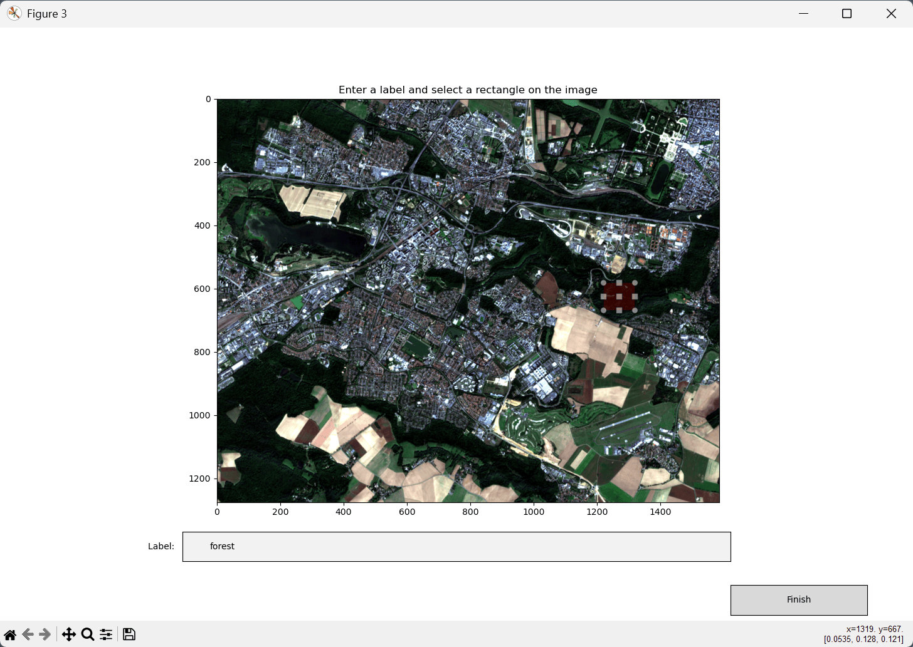
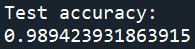
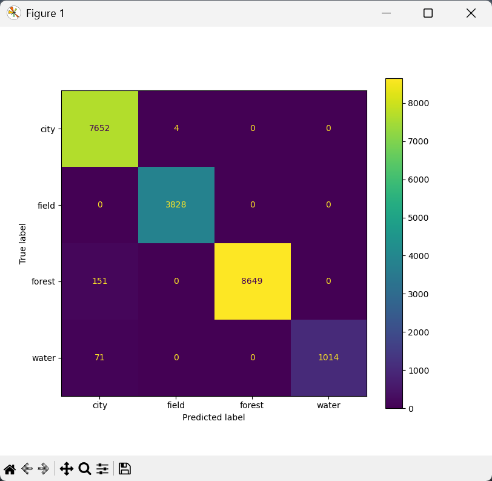

Test d'un classifieur
Nous avons un classifieur prêt à être utilisé. Mais avant de l'appliquer à nos données d'étude, nous aimerions être sûrs qu'il performera bien sur des données qu'il n'a jamais vues. Nous allons donc le tester avec PyRaTe.
Problème du sur-apprentissage
En apprentissage automatique, le nerf de la guerre est la généralisation.
En effet, un modèle qui a d'excellente performances sur les données d'entrainement, mais de mauvaises performances sur n'importe quelles autres données ne sert à rien. On veut que le modèle soit capable de généraliser ce qu'il a apprit.
Ceci peut arriver lorsqu'un modèle apprend trop spécifiquement des données d'entrainement. C'est ce que l'on appelle le sur-apprentissage, et c'est la hantise de tous les "data-scientists".
Voici une illustration sur un problème de régression :

Le modèle de gauche est visiblement trop simpliste pour capturer la tendance principale des données : on parle de sous-apprentissage.
Le modèle de droite est visiblement trop complexe, et capture même le bruit dans les données d'entrainement. Il aura donc d'excellentes performances sur les données d'entrainement, mais aura du mal à généraliser : il y a sur-apprentissage.
Le modèle idéal est au milieu : assez complexe pour capturer la tendance principale des données d'entrainement, sans aller jusqu'à apprendre le bruit dans les données.
Le sur-apprentissage peut avoir différentes origines :
-
Trop peu de données d'entrainement.
-
Des données d'entrainement pas assez représentatives.
-
Des données de mauvaise qualité (mauvais labels, déséquilibre entre labels, etc.).
-
Un type de modèle trop complexe.
-
Trop peu de d'entrées au modèle.
Dans le contexte de vos projet, en cas de de sur-apprentissage, vous pouvez essayer :
-
D'ajouter des pixels à vos données d'entrainement.
-
De re-faire votre base de données d'entrainement avec des zones plus représentatives.
-
Ajouter des bandes pertinentes à vos données d'entrainement.
Pour plus d'informations sur le sur-apprentissage, cliquez sur ce lien : Cours sur le sur-apprentissage.
Mais reste alors une question : comment détecter un sur-apprentissage ?
Générer une base de données de test
Le sur-apprentissage est par définition la sous-performance d'un modèle en généralisation.
La méthode classique que nous appliquerons pour détecter ce phénomène sera donc tout simplement de tester notre classifieur sur une base de données de pixels autres que ceux de l'entrainement.
Si le classifieur performe significativement moins bien en test qu'à l'entrainement, c'est qu'il y a probablement sur-apprentissage.
Il nous faut donc constituer une base de données de test.
Pour vos projets de télédétection, il faudra que vos tests soient les plus représentatifs possibles des cas sur lesquels vous voulez appliquer votre classifieur :
-
Si vous voulez un classifieur capable de généraliser à différentes régions du monde, il faudra tester différentes régions.
-
Si vous voulez un classifieur capable de généraliser à différentes saisons pour une même région, il faudra tester différentes saisons.
-
Si vous pouvez vous contenter d'un classifieur capable de généraliser à une région et une temporalité, vous pouvez tester sur des pixels issus de la même image.
Pour notre exemple, nous allons sélectionner des pixels issus de la même image, mais pour des zones de l'image sur lesquelles le classifieur n'a pas été entrainé.
Nous utilisons à nouveau PyRaTe avec la commande suivante :
df_test = PyRaTe.labelling(band_list,display_rgb=[3,2,1])
La fenêtre de labélisation s'ouvre, et nous pouvons sélectionner des pixels à ajouter à notre base de données de test pour les mêmes labels ("forest", "field", "water", "city") :

Après avoir cliqué sur "Finish", nous obtenons le message suivant dans la console Python :

Il contient le nombre de pixels sélectionnés pour chaque label.
La variable df_test contient alors notre base de données de test, sous le même format que notre base de données d'entrainement.
| Nota Bene |
|---|
| Vous pouvez créer plusieurs bases de données de tests sur plusieurs images différentes pour réaliser différents tests. |
Performances en généralisation
Une fois la base de données de test constituée, nous pouvons utiliser PyRaTe pour le test proprement dit.
Pour réaliser un test de notre "pipeline" sur notre jeu de données d'entrainement, utilisez la commande :
PyRaTe.test(classifier_pipeline,df_test)
Apparait alors le message suivant dans la console Python, avec le score d'exactitude du classifieur en test :

Détectez-vous ici un problème de sur-apprentissage ?
| Nota Bene |
|---|
| N'oubliez pas que le score de d'exactitude est inadapté quand on a un fort déséquilibre dans les labels de notre base de données. |
La fenêtre suivante apparait aussi :

Ce type de tableau se nomme une matrice de confusion.
Il permet de rapidement identifier l'origine des erreurs de prédiction de notre classifieur sur les données de test.
D'un point de vue général :
-
La diagonale correspond au nombre de pixels dont le label a été correctement prédit.
-
Hors de la diagonale sont les nombres de pixels pour lesquels les labels n'ont pas été correctement prédit.
Du point de vue d'un label en particulier, il y a 4 types d'erreurs :
-
TP : les vrais positifs, ce label a été prédit et c'était le bon label.
-
TN : le vrais négatifs, ce label n'a pas été prédit et ce n'était pas le bon label.
-
FP : les faux positifs, ce label a été prédit mais ce n'était pas le bon label.
-
FN : les faux négatifs, ce label n'a pas été prédit mais c'était le bon label.
Voici une illustration des 2 points de vues :

Dans notre cas, d'où viennent principalement les erreurs de prédiction en test ?
Quelles performances / erreurs peuvent être attendues en généralisation sur l'image complète ?
Avons-nous la garantie que le classifieur performerait bien sur une image d'une autre région ou à une autre saison ?